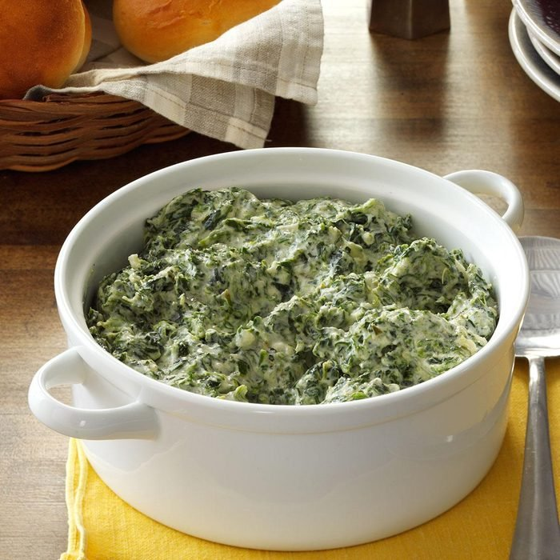

Odin Recipes
Creamed Spinach

Description
Homemade Creamed Spinach (Makes Approximately 1 Cup)
Ingredients
- 1 tablespoon extra-virgin olive oil
- 1 cup spinach, rinsed and dried
- 3 tablespoons unsalted butter
- 3 tablespoons all-purpose flour
- ½ cup whole milk
- Kosher salt and freshly ground black pepper
Steps
- In a large saute pan, heat the olive oil over medium-high heat until shimmering.
- Add the spinach and cook, stirring, until bright green and wilted, about 2 minutes.
- Remove the pan from the heat.
- In a small saucepan, melt the butter over medium-high heat.
- Once the butter begins to bubble, add the flour and whisk to combine.
- Cook, stirring, until the raw flour smell dissipated, 30 to 60 seconds.
- While whisking continuously, add the milk in a steady stream and whisk until completely incorporated.
- Cook over medium-low heat until the bechamel is thickened, about 3 minutes.
- Add the bechamel to the spinach and simmer for about 1 minute, until the flavors are incorporated.
- Season with salt and pepper.